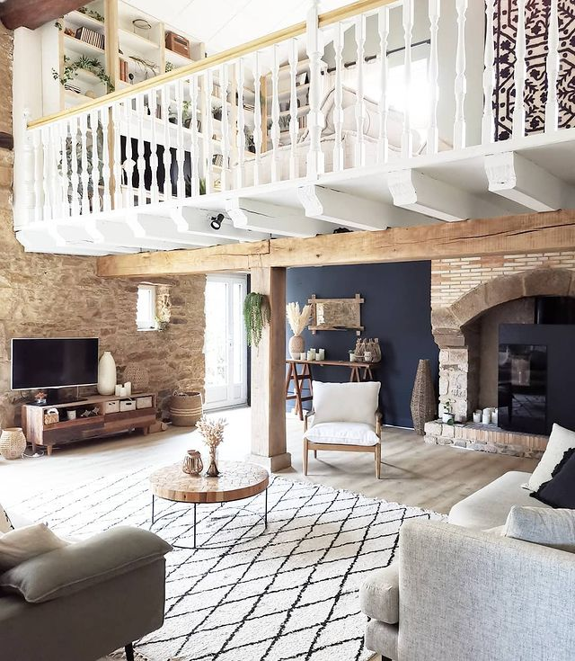
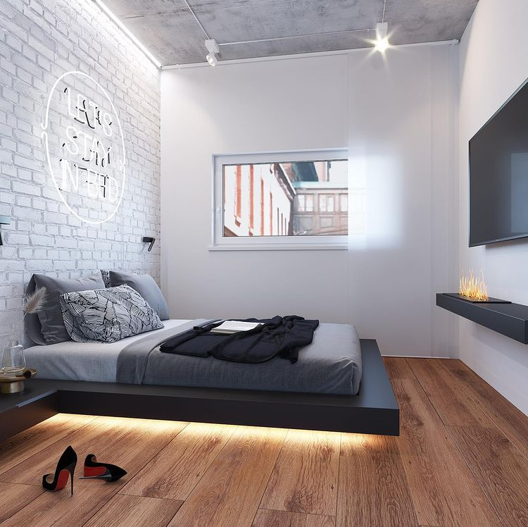

Лофт, гранж і урбан: Сучасні інтер'єри — який ремонт краще зробити в двокімнатній квартирі?
Купівля власної нерухомості біля моря-це, мабуть, мрія кожного. Чисте повітря, м'який клімат і неймовірні заходи сонця. Багато покупців вибирають середнє за площею житло.
Двокімнатна квартира в Одесі, одна з найбільш затребуваних на ринку. Це пояснюється оптимальним балансом між ціною і житловою площею. Сучасні апартаменти з квадратурою 45-70 квадратних метрів дають можливість організувати затишний і функціональний простір, який буде відповідати будь-яким запитам господаря. Завдяки продуманому зонування, можна реалізувати практично будь-які дизайнерські рішення. Головне визначитися, який інтер'єр підійде саме вам.
Планування двокімнатної квартири
Перед тим як перепланувати або відремонтувати двокімнатну квартиру в Одесі, важливо знати, хто саме буде в ній жити: молода сім'я, пара з дитиною, самотня людина. Від цього рішення безпосередньо залежить, як саме слід зонувати приміщення: Для одного або двох осіб оптимальним рішенням є поділ зон на спальню і вітальню.
При плануванні ремонту для сім'ї з дитиною – одна кімната буде дитячою, а друга для батьків. Причому друга кімната поєднує в собі спальню, вітальню.
Стандартні габарити кімнат при будівництві будинку не завжди влаштовують власників житла, тому перепланування є вірним рішенням, щоб виправити наявні недоліки і створити простір, який хочеться. Важливо пам'ятати, щоб уникнути проблем в подальшому, перепланування квартири потрібно узгодити і узаконити.
Квартира в стилі лофт 
Спочатку такий стиль мало житло, яке було обладнано в будівлях промислового призначення. Особлива обробка, цікаві дизайнерські рішення та елементи інтер'єру сприяли тому, що стиль лофт щільно увійшов в наше життя і дуже затребуваний серед молоді.
Основні риси стилю:
- Груба обробка: цегляна кладка, груба штукатурка, труби, радіатори опалення, які зухвало визирають, приковуючи погляди.
- Практично повна відсутність перегородок.
- Високі стелі і великі вікна – важливо, щоб було якомога більше природного світла.
- Промислові елементи декору: вуличні знаки, гойдалки.
- Двокімнатна квартира в Одесі якнайкраще підійде для створення стилю лофт.
Квартира в стилі гранж 
Ще один затребуваний стиль, який застосуємо до інтер'єру двокімнатних квартир – гранж. Його характерні риси-це простота, комфорт, функціональність. В обробці використовується паркетна дошка, декоративні штукатурки, цегла.
Родзинкою стилю є поєднання класичних оздоблювальних матеріалів і необроблені елементи, на зразок цегляної кладки, дерев'яних балок, бетонних плит. Все це створює незвичайний інтер'єр.
Квартира в стилі урбан 
Житло з ремонтом в стилі урбан поєднує в собі ритм великого міста, комфорт і затишок. В інтер'єрах характерна обробка матеріалами з грубою обробкою. Також можлива імітація таких матеріалів, на зразок цегляної кладки, штукатурки в колір сирого бетону, металеві елементи.
Який з цих стилів ви б не вибрали, важливо, щоб квартира зберегла функціональність і затишок, щоб в неї хотілося повертатися після довгої відсутності.